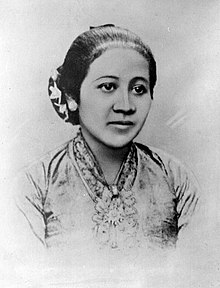

Raden Ayu Adipati Kartini Djojoadhiningrat (21 April 1879 – 17 September 1904) atau sering disebut dengan gelarnya sebelum menikah: Raden Ajeng Kartini, adalah seorang tokoh Jawa dan Pahlawan Nasional Indonesia.[1] Kartini adalah seorang pejuang kemerdekaan dan kedudukan kaumnya, pada saat itu terutama wanita Jawa.[2] Ia mempunyai tanggal lahir yang sama seperti dr. Radjiman Wedyodiningrat, yakni sama-sama lahir pada 21 April 1879. Ia dilahirkan dalam keluarga bangsawan Jawa di Hindia Belanda (sekarang Indonesia). Setelah bersekolah di sekolah dasar berbahasa Belanda, ia ingin melanjutkan pendidikan lebih lanjut, tetapi perempuan Jawa saat itu dilarang mengenyam pendidikan tinggi. Ia bertemu dengan berbagai pejabat dan orang berpengaruh, termasuk J.H. Abendanon, yang bertugas melaksanakan Kebijakan Etis Belanda. Setelah kematiannya, saudara perempuannya melanjutkan pembelaannya untuk mendidik anak perempuan dan perempuan.[3] Surat-surat Kartini diterbitkan di sebuah majalah Belanda dan akhirnya, pada tahun 1911, menjadi karya: Habis Gelap Terbitlah Terang, Kehidupan Perempuan di Desa, dan Surat-Surat Putri Jawa. Ulang tahunnya sekarang dirayakan di Indonesia sebagai Hari Kartini untuk menghormatinya, serta beberapa sekolah dinamai menurut namanya dan sebuah yayasan didirikan atas namanya untuk membiayai pendidikan anak perempuan bangsa Indonesia. |  |